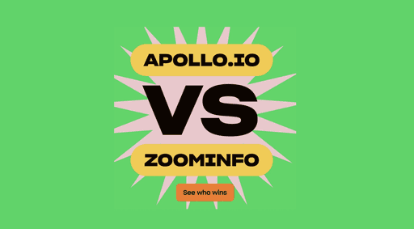
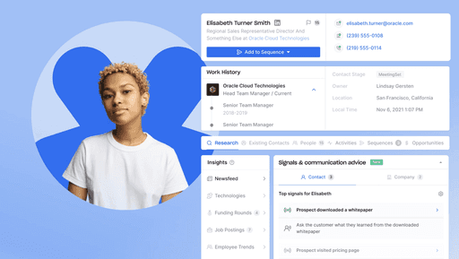
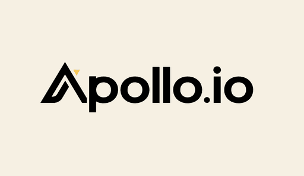

Hi, I'm Andrew; I work in growth marketing and live in NYC.
I specialize in crafting bold marketing
strategies  
Over the last 12+ years I've blended
creativity with data to drive stellar
growth at places like 
Now, I lead marketing strategy
and operations at  Figma.
Figma.
Outside of work, you can find me perfecting my pizza game, playing music, or roaming the streets of New York City looking for my next photography subject.